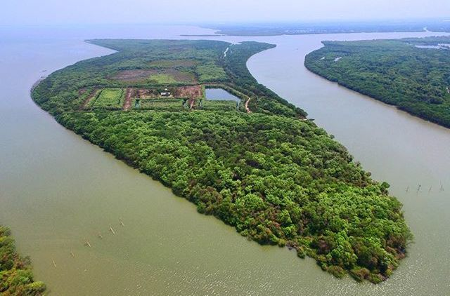

Makanan Khas Sidoarjo
.jpg)
Kupang Lontong
Kupang adalah sejenis kerang laut yang berukuran
sangat kecil. Kupang yang digunakan dalam makanan
ini berwarna putih kekuning-kuningan yang biasanya
disebut kupang beras. Sesuai dengan namanya, ia
disajikan dengan potongan2 lontong dan diberi
kuah air rebusan kupang.
.jpg)
Bandeng Presto
Mungkin inilah alasan Sidoarjo menjadi kota yang
terkenal akan bandengnya. Pengolahan yang kreatif
membuat bandeng segar menjadi cemilan yang tidak
nanggung-nanggung enaknya. Pengolahan yang berbeda
dengan bandeng asap, jajanan ini menggunakan alat
presto yang berfungsi untuk menghilangkan semua
duri yang ada.
Wisata Kabupaten Sidoarjo

Pulau Sarinah
Pulau yang berlokasi di Desa Tlocor, kec. Jabon,
Sidoarjo ini merupakan hasil sedimentasi dari
semburan lumpur lapindo yang telah terjadi sejak
Tahun 2006 yang lalu. Saat ini Pulau Sarinah yang
memiliki luas sekitar 80 hektar ini telah ditanami
dengan pohon bakau dan berbagai jenis tanaman lainnya.
.jpg)
Museum Mpu Tantular
Museum ini memiliki 3,3 hektar. Anda dapat melihat
berbagai macam benda bersejarah dari golongan:
peninggalan kerajaan, geologi, etnografi, dan numismatika.
.jpg)
Candi Pari
Candi Pari merupakan bagian dari pola Candi Khamer
yang ada di Birma dan Candi Champa yang ada di Thailand.
Secara bentuk, candi ini didirikan pada pemerintahan
Raja Hayam Wuruk ini cenderung sangat berbeda dengan
bangunan candi peninggalan Majapahit yang lainnya.
.jpg)
Kampoeng Batik Jetis
Di Kampung ini anda dapat membeli berbagai macam
produk batik dengan harga yang bervariatif. Dari
mulai batik kelas standar seharga Rp. 150.000
sampai dengan batik mewah seharga jutaan rupiah,
semuanya bisa anda dapatkan di kampoeng ini.